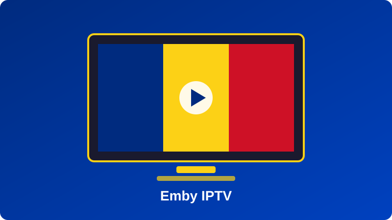
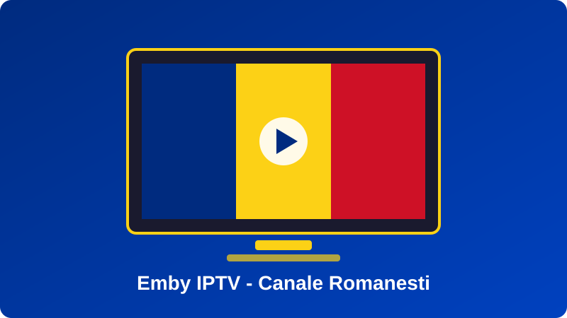

Daca ai un server media acasa si vrei sa vezi si televiziunea romaneasca in aceeasi aplicatie, probabil ai cautat emby iptv. Emby este o platforma foarte apreciata pentru filme si seriale, iar functia Live TV iti permite sa adaugi o lista de canale primita de la un furnizor IPTV. Rezultatul este o interfata curata, cu ghid de program, inregistrari si profiluri pentru toata familia.
Problema este ca multi utilizatori nu stiu de unde sa inceapa. Unii instaleaza serverul si raman fara canale, altii adauga o lista gresita si vad un ecran gol. In acest ghid parcurgi tot drumul: ce inseamna emby iptv, ce ai nevoie, cum adaugi lista M3U si EPG, cum folosesti aplicatia pe televizor si telefon si cum rezolvi cele mai frecvente probleme.
Continutul este scris pentru publicul din Romania si pentru diaspora, cu accent pe canalele romanesti. Echipa Romania IPTV ajuta zilnic familii din tara si din strainatate sa isi porneasca televiziunea fara batai de cap, iar la final vezi cum ceri un test gratuit pe WhatsApp. Daca vrei o privire de ansamblu asupra serviciului, citeste si iptv romania.

Cuprins
- Ce inseamna emby iptv si cum functioneaza
- Ce ai nevoie pentru a porni emby iptv
- Cum adaugi o lista IPTV in Emby pas cu pas
- Cum folosesti emby iptv pe fiecare dispozitiv
- Canale romanesti pe care le poti urmari in Emby
- Inregistrari, ghid TV si functii avansate
- Probleme frecvente la emby iptv si solutii
- Emby sau un player direct: ce alegi
- Intrebari frecvente
- Concluzie
Ce inseamna emby iptv si cum functioneaza
Emby: un server media care poate primi si TV live
Emby este un server media pe care il instalezi pe calculator, NAS sau mini-PC. El organizeaza filme, seriale si muzica, iar apoi le trimite catre telefon, televizor sau tableta. Cand vorbim despre emby iptv, ne referim la functia Live TV, prin care serverul primeste o lista de canale transmise prin internet si o afiseaza in aceeasi interfata cu restul bibliotecii tale.
Emby nu este un furnizor de canale
Aici apare cea mai frecventa confuzie. Emby nu include canale, nu vinde abonamente si nu are o lista proprie. Aplicatia este doar „vitrina": canalele vin de la un furnizor IPTV, printr-un link M3U sau prin datele Xtream Codes. De aceea, un setup de tip emby iptv are nevoie de doua piese: serverul Emby si un abonament cu canale romanesti.
De ce aleg oamenii emby iptv in locul unui player simplu
Un player obisnuit afiseaza lista si atat. Cu Emby primesti inregistrari (DVR), ghid de program unitar, profiluri pentru membrii familiei si acces la acelasi cont de pe mai multe dispozitive. Pentru familiile din diaspora, avantajul este ca ai o singura aplicatie pentru tot: seriale salvate, filme personale si canale live din Romania.
In practica, emby iptv se potriveste celor care vor control: ordonezi canalele cum doresti, ascunzi ce nu te intereseaza si inregistrezi emisiunile preferate. Daca vrei doar sa porneste televizorul in doua minute, un player direct este mai simplu, iar mai jos vezi cand merita fiecare varianta.
Ce ai nevoie pentru a porni emby iptv
Serverul Emby si licenta Premiere
Instalezi Emby Server pe Windows, macOS, Linux sau pe un NAS compatibil. Functia Live TV si DVR este oferita in cadrul Emby Premiere, abonamentul platit al platformei. Verifica pe site-ul oficial conditiile actuale, pentru ca preturile si pachetele se pot schimba. Fara Premiere, vei putea folosi biblioteca de filme, dar nu si partea de televiziune live.
Un abonament IPTV cu lista M3U si EPG
Pentru partea de canale ai nevoie de un furnizor care iti ofera un link M3U si, ideal, o sursa XMLTV pentru ghidul de program. La Romania IPTV primesti lista de canale romanesti si datele necesare pentru orice player sau server compatibil, iar testul gratuit se cere pe WhatsApp.
Hardware si internet
Serverul nu are nevoie de o masina puternica daca doar redirectioneaza fluxul fara conversie. Un mini-PC modest este suficient. Daca insa Emby trebuie sa transcodeze imaginea pentru dispozitive mai vechi, ai nevoie de un procesor mai bun sau de accelerare hardware. Pentru internet, calculeaza circa 10 Mbps pentru HD si 25 Mbps pentru 4K, pentru fiecare ecran activ.
O lista simpla de verificare inainte sa incepi: server instalat, licenta Premiere activa, link M3U primit, sursa EPG disponibila si o conexiune stabila. Cu acestea la indemana, configurarea emby iptv dureaza de obicei sub douazeci de minute.
Cum adaugi o lista IPTV in Emby pas cu pas
Pasul 1: deschide setarile Live TV
Intra in panoul web al serverului, de obicei la adresa serverului pe portul 8096. Din meniul de administrare alege sectiunea Live TV si apasa pe optiunea de adaugare a unui tuner. Aici incepe adevarata configurare emby iptv.
Pasul 2: alege tunerul M3U
Din lista de tipuri de tuner selecteaza M3U Tuner. Lipeste linkul primit de la furnizor in campul de adresa si, daca ai un fisier local, il poti incarca de pe disc. Verifica sa nu existe spatii la inceputul sau la sfarsitul linkului, pentru ca asta este cauza numarul unu a listelor goale.
Pasul 3: adauga ghidul de program
Dupa tuner, adaugi un furnizor de ghid, de exemplu o sursa XMLTV. Emby potriveste canalele cu emisiunile dupa identificatorul fiecarui canal. Daca identificatorii din lista nu seamana cu cei din ghid, vei vedea canale fara program, iar atunci trebuie sa legi manual canalele de ghid.
Pasul 4: salveaza si actualizeaza canalele
Salveaza setarile, apoi ruleaza actualizarea ghidului. In cateva minute canalele apar in sectiunea TV live din aplicatie. Deschide mai multe canale pentru test, la ore diferite, ca sa vezi cum se comporta fluxul.
Daca ai mai multe liste, poti adauga mai multe tunere. Ai grija insa ca lista sa contina doar canalele care te intereseaza, deoarece o lista foarte mare incetineste incarcarea ghidului si face navigarea greoaie.
Cum folosesti emby iptv pe fiecare dispozitiv
Android TV, Google TV si Fire TV
Aplicatia Emby este disponibila in magazinele oficiale pentru Android TV si Fire TV. O instalezi, te conectezi la serverul tau si gasesti sectiunea de TV live in meniul principal. Telecomanda ajunge pentru a schimba canalul, a deschide ghidul si a programa o inregistrare.
Samsung, LG si alte televizoare
Unele Smart TV-uri au aplicatie Emby nativa, altele nu. Daca televizorul tau nu o are, conecteaza un stick sau un box cu Android TV la portul HDMI. Este o solutie ieftina si mai stabila decat aplicatiile de pe televizoarele vechi. Pentru alegerea unui box, vezi ghidul despre android box iptv.
Telefon, tableta si browser
Pe Android si iPhone instalezi aplicatia Emby din magazin, iar pe calculator poti folosi direct browserul. Pentru acces din afara casei, trebuie sa permiti conexiunile catre server, fie printr-o adresa externa, fie printr-un tunel securizat. Fa acest pas cu atentie si foloseste parole puternice.
Calitatea experientei emby iptv difera de la un aparat la altul. Cele mai bune rezultate le obtii pe dispozitive care decodeaza video hardware, deoarece serverul nu mai trebuie sa transcodeze si fluxul ajunge direct, fara intarzieri.
Canale romanesti pe care le poti urmari in Emby
Generaliste, stiri si divertisment
Un serviciu bun trebuie sa includa Pro TV, Antena 1, Kanal D, Prima TV, Digi 24, Antena 3 CNN, Romania TV si TVR. In Emby, aceste canale apar in ordine alfabetica sau in ordinea listei, iar tu poti marca favoritele pentru acces rapid.
Sport, filme si copii
Familiile cauta si canale de sport, filme, documentare si desene animate in limba romana. Inainte de abonare, cere un test si verifica daca meciurile ruleaza fluent. Pentru comparatii cu alte liste, citeste si canale iptv romania.
Muzica populara si canale regionale
Etno TV, Taraf TV si Favorit TV sunt importante pentru multi romani din strainatate. Nu toti furnizorii le includ, asa ca verifica lista inainte de plata.
Un avantaj al setupului emby iptv este ca poti grupa canalele pe categorii si poti ascunde ce nu folosesti. Rezultatul este o lista curata, fara sute de canale straine pe care nu le deschizi niciodata.

Inregistrari, ghid TV si functii avansate
DVR: inregistrezi emisiunile preferate
Emby poate programa inregistrari din ghid. Alegi emisiunea, apesi pe inregistrare si fisierul ajunge in folderul configurat pe server. Poti seta inregistrarea unui serial intreg, nu doar a unui episod. Ai grija la spatiul pe disc, deoarece un film in HD ocupa mai multi gigabytes.
EPG si potrivirea canalelor
Ghidul de program este inima experientei. Daca o emisiune nu apare, verifica potrivirea identificatorilor si fusul orar al serverului. O diferenta de ora in setari este suficienta ca toata programarea sa para decalata.
Profiluri, control parental si utilizatori multipli
Poti crea utilizatori separati pentru fiecare membru al familiei. Copiii vad doar canalele permise, iar adultii au acces complet. Aceasta este una dintre cele mai apreciate functii ale emby iptv in locuintele cu mai multe persoane.
Functiile avansate nu sunt obligatorii. Multi utilizatori pornesc cu configurarea de baza si adauga DVR-ul sau profilurile mai tarziu, dupa ce se obisnuiesc cu interfata.
Probleme frecvente la emby iptv si solutii
Lista este goala sau canalele nu se incarca
Verifica linkul M3U in browser: daca nu se descarca un fisier, problema este la link sau la contul tau. Actualizeaza tunerul si reporneste serverul. Daca abonamentul a expirat, lista poate returna o eroare.
Imaginea se blocheaza sau se intrerupe
Cauza obisnuita este internetul sau transcodarea. Testeaza viteza reala, foloseste cablu de retea unde poti si seteaza calitatea pe automat sau directa. Daca serverul ruleaza pe un calculator slab, transcodarea il suprasolicita.
Ghidul de program nu corespunde
Legatura dintre canale si EPG se poate face manual. Deschide setarile Live TV, alege canalul si asociaza-l cu intrarea corecta din ghid. Verifica si fusul orar.
Tine un mic jurnal cu ce ai incercat, pentru ca atunci cand scrii suportului, informatiile precise grabesc rezolvarea. O problema de emby iptv se rezolva mai repede cu date clare decat cu descrieri vagi.
Emby sau un player direct: ce alegi
Cand merita emby iptv
Alege Emby daca ai deja un server media, vrei inregistrari, ai mai multi utilizatori sau doresti o interfata unitara pentru filme si televiziune. Este o solutie pentru cei care nu se sperie de cateva setari.
Cand ajunge un player simplu
Daca vrei doar sa vezi canalele romanesti, un player direct este mai rapid. Instalezi aplicatia, introduci lista si ai imagine. Nu platesti licenta Premiere si nu intretii niciun server. Compara cu ghidul dragon iptv pentru o varianta simpla.
Alternative la Emby
Jellyfin este un server gratuit cu functii similare, iar Plex are propriul sistem de TV live. Fiecare are avantaje, dar principiul este identic: serverul gestioneaza lista, iar furnizorul ofera canalele. In diaspora, alte comunitati folosesc setupuri asemanatoare, de exemplu greek iptv sau tilaa iptv.
Nu exista un raspuns unic. Pentru multi, combinatia ideala este Romania IPTV pentru canale stabile si un server media pentru tot restul continutului. Important este sa testezi inainte sa platesti.
Intrebari frecvente despre emby iptv
Ce este emby iptv?
Este folosirea functiei Live TV din Emby pentru a reda canale IPTV dintr-o lista M3U. Emby este serverul si aplicatia, iar canalele vin de la un furnizor separat.
Emby ofera canale TV gratuite?
Nu. Emby nu include canale proprii. Trebuie sa adaugi o lista de la un furnizor. Listele gratuite gasite online sunt de obicei instabile si nesigure.
Am nevoie de Emby Premiere pentru IPTV?
Da, functia Live TV si DVR face parte din Emby Premiere. Verifica pe site-ul oficial pachetele si preturile actuale.
Cum adaug o lista M3U in Emby?
Din Setari, Live TV, adauga un tuner de tip M3U, lipeste linkul primit de la furnizor si salveaza. Apoi adaugi o sursa EPG si actualizezi ghidul.
Pot vedea canale romanesti in strainatate cu emby iptv?
Da. Atata timp cat ai internet si un abonament cu canale romanesti, diaspora le vede la fel ca in tara.
De ce nu apare ghidul de program?
De obicei identificatorii canalelor nu se potrivesc cu sursa XMLTV sau fusul orar este gresit. Asociaza manual canalele cu ghidul si verifica ora serverului.
Ce viteza de internet imi trebuie?
Aproximativ 10 Mbps pentru HD si 25 Mbps pentru 4K per ecran. Daca mai multe persoane se uita simultan, aduna cerintele.
Cum primesc un test gratuit pentru canale romanesti?
Scrie-ne pe WhatsApp si primesti acces de test, fara card si fara contract. Echipa raspunde in limba romana.
Testeaza gratuit canalele romanesti
Scrie-ne pe WhatsApp si primesti acces de test, fara card si fara contract.
Cere testul pe WhatsAppConcluzie
Pe scurt, emby iptv inseamna Emby Server plus o lista de canale de la un furnizor. Serverul organizeaza, iar furnizorul ofera continutul. Daca vrei inregistrari, profiluri si o interfata unitara, merita sa configurezi Emby cu atentie; daca vrei doar canale, un player simplu este suficient.
Pentru canale romanesti stabile, EPG si suport in limba romana, scrie-ne pe WhatsApp si porneste-ti televizorul cu Romania IPTV. Mai multe ghiduri gasesti in blog, inclusiv editor m3u iptv si download ultimate iptv.